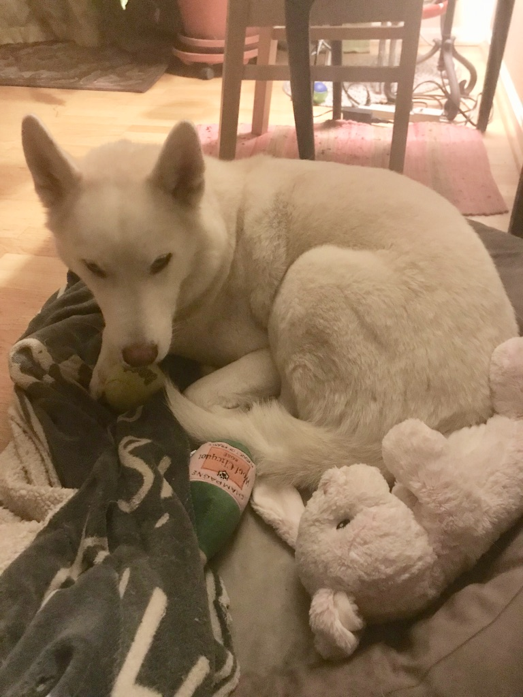

Cats Rule
Hey! Check out this amazing resource! betamore
Absolutely no pressure. You are just a whisper floating across a mountain. This is your creation - and it's just as unique and special as you are. Each highlight must have it's own private shadow. You can do anything your heart can imagine. In painting, you have unlimited power. You have the ability to move mountains. Use absolutely no pressure. Just like an angel's wing. Everyone needs a friend. Friends are the most valuable things in the world. These things happen automatically. All you have to do is just let them happen. Every single thing in the world has its own personality - and it is up to you to make friends with the little rascals. This is probably the greatest thing that's ever happened in my life. If you overwork it you become a cloud killer. There's nothing worse than a cloud killer. I get carried away with this brush cleaning. Don't be afraid to make these big decisions. Once you start, they sort of just make themselves. Maybe there's a happy little Evergreen that lives here. We don't want to set these clouds on fire. Let that brush dance around there and play. See there, told you that would be easy. The first step to doing anything is to believe you can do it. See it finished in your mind before you ever start. We don't have anything but happy trees here. You can get away with a lot. Steve wants reflections, so let's give him reflections. Maybe there's a little something happening right here. A happy cloud. Let's make a nice big leafy tree. Now we'll take the almighty fan brush. You have to make these big decisions. Don't kill all your dark areas - you need them to show the light. I'm gonna start with a little Alizarin crimson and a touch of Prussian blue You can create beautiful things - but you have to see them in your mind first.

| Monday | Tuesday | Wednesday | Thursday | Friday |
|---|---|---|---|---|
| Call Mom | Water the Plants | Day Off | Hair Appointment | Happy Hour |